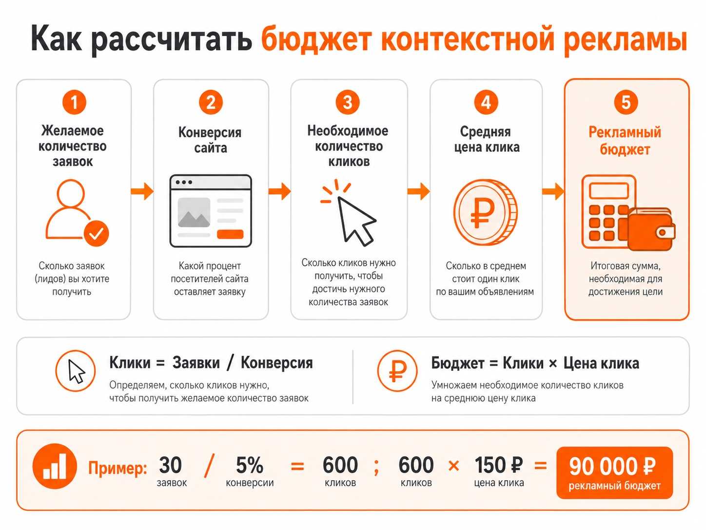

Блог о платном трафике
Стоимость контекстной рекламы: из чего складывается цена и какой бюджет нужен
У контекстной рекламы нет единой фиксированной цены. Для одного бизнеса рабочий бюджет может составлять десятки тысяч рублей в месяц, для другого - сотни тысяч или несколько миллионов.
Полную стоимость правильнее считать так:
рекламный бюджет + настройка и ведение рекламы + дополнительные расходы, если они необходимы для проекта.
При этом главный вопрос не в том, сколько стоит клик или сколько денег можно положить на счет Яндекс Директа. Гораздо важнее понять, сколько бизнес может платить за заявку или продажу и какой объем рекламы нужен для получения результата.
Из чего складывается стоимость контекстной рекламы
Основные расходы можно разделить на несколько частей.

Рекламный бюджет
Это деньги, которые расходуются непосредственно внутри Яндекс Директа.
В зависимости от выбранной стратегии оплата может происходить за клики или за целевые действия. При автоматических стратегиях система может оптимизировать показы под заявки, покупки и другие цели, передаваемые из Яндекс Метрики.
Рекламный бюджет не является стоимостью работы специалиста. Если на продвижение выделено 100 000 ₽, это еще не означает, что вся контекстная реклама стоит 100 000 ₽.
Настройка рекламных кампаний
Если реклама запускается с нуля, отдельно может оплачиваться первоначальная настройка.
Обычно сюда входит:
- анализ продукта и целевой аудитории;
- разработка структуры рекламных кампаний;
- настройка целей и аналитики;
- подготовка объявлений и креативов;
- настройка географии и аудиторий;
- работа с поисковыми запросами и автотаргетингом;
- настройка стратегий;
- запуск и первичная проверка кампаний.
О стоимости настройки Яндекс Директа
Ведение и оптимизация
После запуска реклама требует контроля. Нужно анализировать расходы и конверсии, поисковые запросы, площадки, аудитории, работу стратегий, стоимость заявок и другие показатели.
Поэтому в большинстве проектов есть отдельная стоимость ведения контекстной рекламы.
О стоимости ведения Яндекс Директа
Дополнительные расходы
Они нужны не каждому проекту, но иногда без них нормальная реклама невозможна.
Например:
- доработка сайта или посадочной страницы;
- настройка Яндекс Метрики;
- коллтрекинг;
- CRM;
- создание товарного фида;
- разработка дополнительных креативов;
- подключение сквозной аналитики.
Поэтому сравнивать предложения разных специалистов только по цене настройки или ведения не совсем корректно. Нужно смотреть, какие работы входят в стоимость.
От чего зависит рекламный бюджет
Сам Яндекс Директ не устанавливает единую цену контекстной рекламы. Стоимость трафика формируется динамически и зависит от условий конкретного рекламодателя.
На нее сильнее всего влияют следующие факторы.
Ниша и конкуренция
Чем больше компаний борются за одну аудиторию, тем дороже обычно обходится привлечение трафика.
Поэтому нельзя взять среднюю цену клика по интернету и использовать ее для расчета своего бизнеса. Стоимость привлечения посетителя в интернет-магазин недорогих товаров и в компанию, продающую дорогое промышленное оборудование, может отличаться в разы.
Регион показов
Конкуренция в разных городах и регионах отличается.
Если рекламироваться по всей России, цена и эффективность трафика также могут заметно отличаться между регионами. Поэтому крупные географические сегменты иногда имеет смысл анализировать отдельно.
Тип рекламной кампании
Поиск, Рекламная сеть Яндекса, товарная реклама, ретаргетинг и другие варианты продвижения работают по-разному.
На поиске рекламодатель конкурирует за пользователей, которые уже сформулировали свой запрос. В рекламных сетях алгоритмы могут находить аудиторию по ее поведению, интересам и вероятности совершить нужное действие.
Сравнивать стоимость клика этих источников напрямую обычно бессмысленно. Дешевый клик не обязательно означает дешевую заявку.
Конверсия сайта
Допустим, два рекламодателя покупают переходы по одинаковой цене.
У первого сайта из 100 посетителей заявку оставляют пять человек, у второго - один. При одинаковой стоимости трафика цена заявки у них будет отличаться в пять раз.
Поэтому стоимость контекстной рекламы нельзя рассматривать отдельно от сайта, оффера и качества обработки обращений.
Ценность конкретной аудитории
Дорогой пользователь иногда выгоднее дешевого.
Например, один сегмент может давать дорогие клики, но значительно чаще покупать. Другой приносит много дешевого трафика без заявок.
При оптимизации кампаний я в первую очередь смотрю на стоимость и качество целевого действия, а не пытаюсь любой ценой сделать минимальную стоимость клика.
Накопленная статистика
Современный Яндекс Директ во многом работает на алгоритмах. Для оптимизации используются данные о действиях пользователей и конверсиях.
Если кампания получает достаточно качественных данных, алгоритму проще определять аудиторию, которая с большей вероятностью совершит нужное действие.
Поэтому слишком маленький бюджет может стать ограничением сам по себе: кампания получает мало трафика и мало конверсий, из-за чего системе сложнее обучаться.
Сколько стоит один клик в контекстной рекламе
Универсальной цены клика нет.
Она определяется аукционом и может постоянно меняться. Яндекс указывает, что на стоимость влияют конкуренция, качество объявления, CTR, регион, тематика и другие параметры.
Но ориентироваться только на CPC я бы не рекомендовал.
Предположим:
- вариант А дает клики по 50 ₽ и конверсию сайта 1%;
- вариант Б дает клики по 150 ₽ и конверсию 10%.
В первом случае для получения одной заявки в среднем потребуется 100 переходов, то есть 5 000 ₽.
Во втором - около 10 переходов, то есть 1 500 ₽.
Клик во втором варианте втрое дороже, но заявка обходится намного дешевле.
Именно поэтому попытка снизить цену клика сама по себе редко является правильной целью рекламной кампании.
Как рассчитать бюджет контекстной рекламы
Есть два основных способа.

Расчет от цены клика
Такой вариант можно использовать для предварительного прогноза, если известна примерная конверсия сайта.
Формула:
Количество необходимых кликов = количество желаемых конверсий / конверсия сайта
Далее:
Рекламный бюджет = количество кликов × средняя стоимость клика
Пример.
Нужно получить 30 заявок. Предполагаемая конверсия сайта - 5%.
30 / 0,05 = 600 переходов.
Если прогнозная стоимость одного перехода составляет 150 ₽:
600 × 150 = 90 000 ₽.
В этом условном примере на рекламный трафик потребуется около 90 000 ₽.
Это именно расчетная модель. Реальная цена клика и конверсия после запуска могут отличаться.
Для предварительной оценки поискового трафика в Яндекс Директе есть инструмент «Прогноз бюджета». Он рассчитывает примерные расходы и стоимость переходов для выбранных регионов и ключевых фраз. Сам Яндекс предупреждает, что фактические результаты могут отличаться от прогноза.
О прогнозе бюджета Яндекс Директа
Расчет от допустимой стоимости заявки или продажи
Для бизнеса этот способ обычно полезнее.
Сначала нужно определить, сколько компания может платить за целевое действие.
Например, бизнес готов получать заявку максимум по 3 000 ₽ и хочет получать 30 заявок в месяц.
Тогда ориентир рекламного бюджета:
3 000 × 30 = 90 000 ₽.
Если реальная цена заявки после запуска окажется 2 000 ₽, тот же объем можно получить дешевле или увеличить количество обращений.
Если заявка будет стоить 5 000 ₽, придется либо повышать допустимую стоимость привлечения, либо улучшать рекламу, сайт, предложение и работу с обращениями.
Как понять, сколько можно платить за заявку
Здесь уже нужна экономика бизнеса.
Недостаточно узнать среднюю цену заявки у конкурентов. У компаний могут сильно отличаться:
- средний чек;
- маржинальность;
- конверсия заявки в продажу;
- повторные продажи;
- срок жизни клиента;
- затраты на выполнение заказа.
Допустим, одна компания продает услугу за 20 000 ₽, а другая за 200 000 ₽. Для первой заявка по 5 000 ₽ может оказаться слишком дорогой. Для второй такая стоимость может быть отличным результатом.
Поэтому рекламный бюджет должен рассчитываться от экономики конкретного проекта, а не от универсальной таблицы «сколько стоит Яндекс Директ».
Какой минимальный бюджет нужен для запуска
Я бы не определял минимальный бюджет одной цифрой для всех ниш.
Технически запустить кампанию можно с небольшой суммой. Но возможность запустить рекламу и возможность получить достаточно данных для оценки эффективности - разные вещи.
Если в вашей нише целевая заявка объективно стоит несколько тысяч рублей, бюджет в 10 000 ₽ может дать всего несколько конверсий. По такой выборке сложно понять реальную эффективность рекламы и обучить автоматическую стратегию.
Поэтому сначала нужно оценить:
- Допустимую цену заявки или продажи.
- Необходимое количество конверсий.
- Ориентировочную стоимость трафика.
- Конверсию сайта.
- Объем спроса.
И только после этого определять стартовый бюджет.
У Яндекс Директа также есть технические требования к бюджетам отдельных автоматических стратегий. Например, при оплате за конверсии недельный бюджет должен быть не меньше десятикратной заданной цены конверсии.
Это еще одна причина не выбирать рекламный бюджет просто по принципу «готов тратить столько-то в месяц».
Можно ли начать с небольшого бюджета
Можно, но нужно понимать ограничения.
Небольшой бюджет имеет смысл, если:
- спрос в нише небольшой;
- география очень узкая;
- клики относительно недорогие;
- задача запуска - проверить гипотезу;
- бизнесу не требуется большое количество заявок.
Если же рынок большой и конкурентный, чрезмерное ограничение бюджета может привести к тому, что реклама будет собирать слишком мало статистики.
В результате решение «Яндекс Директ у нас не работает» будет принято по нескольким случайным заявкам или вообще без достаточного количества данных.
Что дороже: самостоятельно запустить рекламу или нанять специалиста
Самостоятельный запуск позволяет не платить за работу подрядчика, но рекламный бюджет все равно остается.
При этом ошибка в аналитике, выборе стратегии, структуре кампаний или оценке трафика может стоить значительно дороже стоимости настройки.
Работа специалиста оправдана не самим фактом настройки интерфейса. Основная задача - правильно распределять рекламный бюджет и получать нужные бизнесу обращения или продажи по приемлемой стоимости.
Поэтому при выборе подрядчика я бы сравнивал не только цену услуг, но и:
- что именно входит в работу;
- как будет настроена аналитика;
- кто фактически занимается кампанией;
- как оценивается результат;
- какие показатели контролируются после запуска;
- есть ли релевантный опыт и кейсы.
Как снизить стоимость контекстной рекламы
Снижать расходы имеет смысл не за счет искусственного ограничения цены клика, а за счет повышения эффективности всей рекламной связки.
На практике я в первую очередь смотрю на следующие направления:
- отключение явно неэффективного трафика;
- анализ поисковых запросов и площадок;
- разделение аудиторий с разной эффективностью;
- корректную передачу конверсий в Яндекс Директ;
- выбор подходящей стратегии;
- улучшение объявлений и креативов;
- работу с посадочной страницей;
- повышение конверсии сайта;
- учет качества заявок, а не только их количества.
Иногда после оптимизации средняя цена клика даже увеличивается, но итоговая стоимость продажи снижается. Для бизнеса это хороший результат.
Сколько в итоге стоит контекстная реклама
Единой цены нет.
Полные расходы состоят из рекламного бюджета, стоимости настройки и дальнейшего ведения кампаний. Иногда к ним добавляются аналитика, коллтрекинг, доработка сайта или другие необходимые инструменты.
Сам рекламный бюджет лучше рассчитывать не от суммы, которую «не жалко попробовать», а от экономики бизнеса:
допустимая стоимость привлечения × необходимое количество клиентов или заявок.
После запуска расчет нужно сравнить с фактической статистикой и скорректировать.
Если задача - понять бюджет еще до запуска, сначала оцениваются спрос, стоимость трафика, экономика сделки и необходимое количество обращений. После этого уже можно определить, какой рекламный бюджет имеет смысл вкладывать в контекстную рекламу.